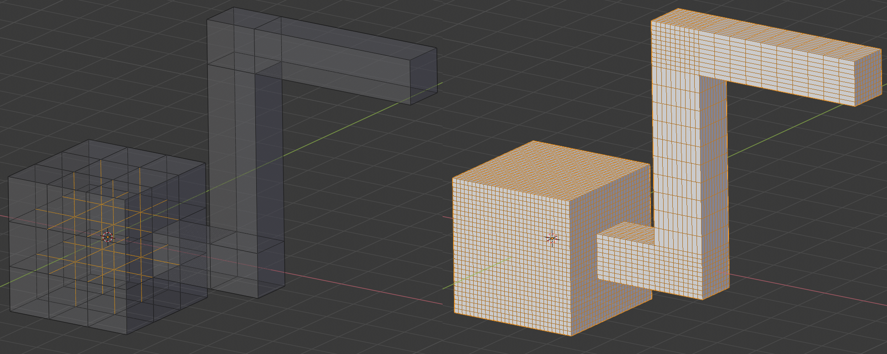
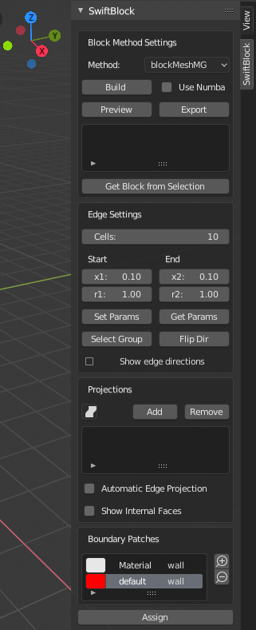
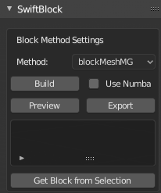
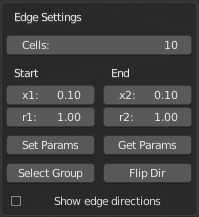
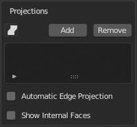
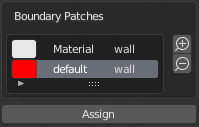
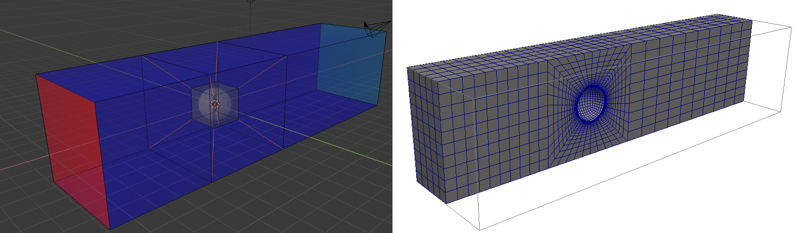

SwiftBlock Addon for Blender 2.8¶
Introduction¶
SwiftBlock is a Blender GUI add-on for the OpenFOAM® blockMesh utility, which creates hexahedral block structured volume meshes for OpenFOAM simulations. Block structure is first modelled as a mesh object in Blender. A graph theory based method implemented in the addon identifies the discrete hexahedral blocks in the mesh object and generates blockMeshDict. Main features include
- user specified divisions and optional grading of block edges
- specification of patches (boundary surfaces)
- specification of blocks to create cell zones/sets
- easy block manipulations including selection, visualisation and disabling of blocks
- visualization of edge directions
- projection of block edges to surfaces on another object to create curved shapes
Application examples include creation of block meshes for
- orthogonal base mesh with elongated or stretched cells for SnappyHexMesh
- controlled grading of hexahedral meshes inside or outside rectangular, cylindrical or spherical shapes.
This documentation describes the version of the add-on available under github/tkeskita. The add-on has been tested with Blender 2.80 and OpenFOAM.org version 7. Previous versions of the add-on are available in github/nogenmyr and github/Flowkersma, and the documentation for original version is available at OpenFOAM wiki.
Installation and Start-up¶
- You need to use Blender 2.80. You can download Blender 2.80 here.
- Add-on code is available at https://github.com/tkeskita/swiftBlock. To download add-on from Github, Select “Clone or download”, then “Download ZIP”.
- Start Blender, go to “Edit” –> “Preferences” –> “Add-ons” –> “Install” –> open the add-on zip file.
- Activate the “SwiftBlock” add-on in Preferences. Add-on is located in OpenFOAM category, Testing level of Blender add-ons.
- Click “Save Preferences” to autoload add-on every time Blender is started
Add-on visibility¶
Add-on is visible in Blender’s 3D Viewport in Sidebar as a separate tab in Edit Mode. To view the add-on panels, you must
- Select a mesh object (in 3D Viewport or in Outliner)
- View Sidebar (“View” –> “Toggle Sidebar” or press “N” key in 3D Viewport)
- Select “SwiftBlock” tab in the Sidebar
Quickstart¶
- Install add-on as specified above
- In Blender, select the default Cube object in 3D Viewport or in Outliner
- Make add-on panels visible as described above
- Click Initialize Object
- Model block geometry in Blender
- Set Edge Parameters for each edge
- Optionally add projections and/or Boundary Patches
- Optionally preview blocks
- Press Export to save blockMeshDict to a case folder
- Run blockMesh OpenFOAM command in terminal to generate mesh
Panels and Settings¶
SwiftBlock GUI consists of four panels: Block Method Settings, Edge Settings, Projections and Boundary Patches.
Block Method Settings¶
This panel contains overall settings and tool buttons. You can hover mouse cursor over fields to see tool tips for more information.
- Initialize Object tool appears when a mesh object is selected Running the tool will intialize the selected object for SwiftBlock, enables Edit Mode, and reveals the rest of the GUI. Note: SwiftBlock tools are available only in Edit Mode.
- Method defines the block generation method. Default value is BlockMeshMG, which supports multi grading. Note: Currently no other methods are available. The source code also includes the original blockMeshBodyFit method, but is has not been upgraded/tested with Blender 2.80, so it is currently disabled.
- Build tool identifies the blocks from the current mesh. Blocks are listed in the panel window after building is completed. Warning: Bulding may take a long time for complex block systems.
- Use Numba option box enables Python Numba performance library. Numba compiles the Build tool into machine code, which decreases the time required for Build. Note: Numba requires installation of the Numba Python libraries.
- Preview tool shows preview of the edges on the result block mesh. Preview requires that the OpenFOAM blockMesh utility is available in Blender. An error message is displayed if blockMesh command is not found. To make blockMesh available, you must start terminal command prompt, source OpenFOAM in the terminal, and start blender from the same terminal. Preview will automatically run Build tool if needed.
- Export tool saves blockMeshDict file into a case folder. The user is prompted to select the case folder.
- Block list contains the list of blocks identified by the Build tool.
- Clicking a block selects and highlights the block in the 3D Viewport. Enable e.g. “Show whole scene transparent” option in the 3D Viewport header to see blocks inside.
- Check box can be deselected to disable a block
- Get Block from Selection selects the block attached to the current selection.
Edge Settings¶
This panel is used to set parameter values and apply them on selected edges.
- Cells specifies the number of divisions.
- Start and End refer to optional edge grading at the start and
end of edges.
- x1 is the first cell length at the start of edge.
- x2 is the last cell length at the end of edge.
- r1 is the geometric boundary layer ratio of neighbor cell lengths at the start of edge. Values larger than 1.0 create grading.
- r2 is the geometric boundary layer ratio of neighbor cell lengths at the end of edge.
- Set Params tool applies the above parameter values to currently selected edges.
- Get Params tool gets the parameter values from active edge.
- Select Group tool adds edges in same edge group to selection. This is a convenience tool to select aligned or connected edges, to ease specification of consistent parameter values.
- Flip Dir tool flips the edge direction of selected edges.
- Show Edge Directions tool visualizes the edge directions by adding cones to edge centers.
Projections¶
This panel contains settings for projecting edges to surfaces on other mesh objects.
- Icon drop down menu specifies the projection object
- Add button will add the specified object as projection object and populates list of projected vertices, edges and faces.
- Remove button will remove all projections
- Projection list contains the projected vertices, edges and faces.
- Clicking on a list row will highlight the item in 3D Viewport. Click Return to SwiftBlock button to return to GUI panel.
- Click on the cross icon to remove a projection.
- Automatic Edge Projection select box will enable automatic snapping of edges to geometry.
- Show Internal Faces will highlight internal faces.
Boundary Patches¶
Boundary Patches panel is used to specify boundary faces and their types utilizing Blender material system. Patches are shown as a list. Initially all faces are added to default boundary patch.
Note: Blender may add a default “Material” material. You can remove it from the patch list unless you intend to use it.
- Clicking on list item will select and highlight the faces belonging to a boundary
- Double-clicking on item will edit the boundary name
- Clicking on the right column will open a drop-down menu, which allows to change the boundary patch type.
- New boundaries are created by selecting one or more faces and then click on the plus icon.
- Selected boundary is deleted by clicking on minus icon.
- Assign button will assign selected faces to a selected boundary patch
Feedback and Help¶
File bug report in github or discuss the add-on on the SwiftBlock thread on cfd-online
Tutorial Example: Flow Around Sphere¶
This example shows steps to create a block mesh around a sphere. This tutorial was originally presented for the previous Blender version on Youtube. The final Blender file is included in the add-on source at example/flow_around_sphere.blend. Note: This tutorial assumes that the user is familiar with mesh modelling in Blender.
- Select the default Cube object and click on Initialize Object in SwiftBlock panel
- Select all vertices, run Swift Block operator Extrude Blocks from the operator search menu by pressing F3 in the 3D Viewport, type name of operator, click operator name in the list, and finally right-click to cancel moving. Extrude Blocks creates face extrusion retaining internal faces.
- Scale exruded vertices by factor 3 using selection center or origin as pivot point. This positions 6 blocks around center cube block.
- Extrude the face in positive X direction by 12 m to create a block towards outlet.
- Extrude the face in negative X direction by 6 m to create another block towards the inlet.
- Click on Build, which creates 9 blocks
- Click on block 0 in the block list to select and highlight the original cube block in the center, then disable that block by clicking on the check box next to block name, so that the inside of that block will not be meshed
- Go to Object Mode and add UV Sphere to origin
- Go back to Object Mode, select Cube object and go to Edit Mode to view SwiftBlock panels
- Click on block 0 in block list to select center block faces.
- In Projections panel, the Sphere is automatically selected as the projection object. Click Add to add projections to Sphere. Check that the projection list includes the 6 center faces by clicking on the face items at the end of the list to highlight them.
- In order to preview mesh near sphere, you must disable one of the four outer central blocks. To do that, select one of the outer faces in the center piece, and click Get Block from Selection to identify the block. Then uncheck the box next to the block in the block list.
- Click on Preview to preview the default mesh, then return to SwiftBlock.
- To add grading towards the sphere, first select one of the diagonal edges inside, then click on Select Group, which will select all diagonal edges.
- Enter values to edge parameters: Cells: 20, x1: 0.01, r1: 1.2
- Then click on Set Params to assign those values to selected edges.
- Click on Preview to preview the graded mesh, then return to SwiftBlock.
- Enable the block that was disabled 6 steps ago.
- Name Boundary Patches by selecting face(s) for each patch and click
on plus icon, then rename patch and change patch type:
- inlet: face on negative X end, patch type: patch
- outlet: face on positive X end, patch type: patch
- wall_outer: other 12 outer faces, patch type: wall
- Finally rename default patch (which should now contain 6 internal faces) to wall_sphere.
- Save Blender file, then click on Export to export blockMeshDict into an OpenFOAM case folder
- Run OpenFOAM command blockMesh in case folder to create block volume mesh and inspect the result with e.g. Paraview
OpenFOAM Trade Mark Notice¶
This offering is not approved or endorsed by OpenCFD Limited, producer and distributor of the OpenFOAM software via www.openfoam.com, and owner of the OPENFOAM® and OpenCFD® trade marks.